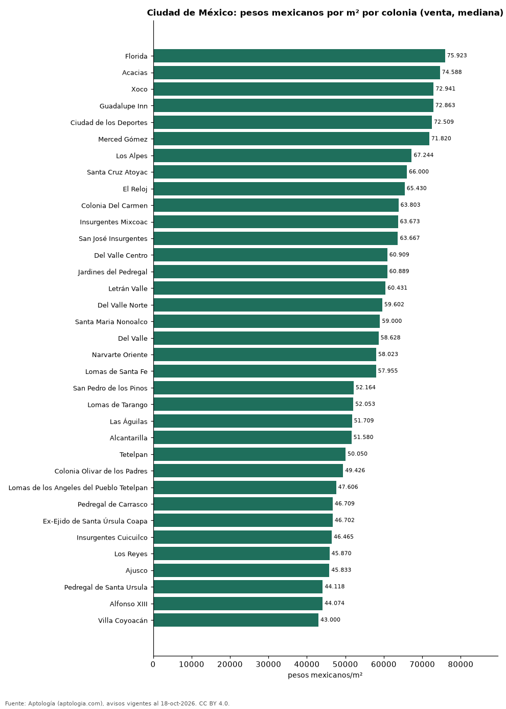

Precio de la vivienda por colonia en Ciudad de México: venta y arriendo en 70 colonias (octubre 2026)
Estudio con datos abiertos (CC BY 4.0). Versión original: https://github.com/elbroker/aptologia-datos/tree/main/estudios/precio-vivienda-ciudad-de-mexico-por-colonia-2026 · DOI: 10.5281/zenodo.23460792
La colonia con el metro cuadrado más caro de Ciudad de México es Florida, con 75.923 pesos mexicanos (USD 4.112) en la mediana de apartamentos en venta; la más barata de la muestra es Villa Coyoacán, con 43.000 pesos mexicanos (USD 2.329). En arriendo, el canon mediano más alto se pide en Polanco III Sección (83.000 pesos mexicanos (USD 4.495) al mes) y el más bajo en Doctores (18.750 pesos mexicanos (USD 1.015)).
Resumen: analizamos 9.023 avisos de apartamentos en 70 colonias de Ciudad de México con 30 avisos o más.
Actualizado: 18 de octubre de 2026 (datos del 18 de octubre de 2026) · Próxima actualización: mensual.

Resumen
| Indicador | Valor |
|---|---|
| Más cara (venta por m²) | Florida: 75.923 pesos mexicanos (USD 4.112) |
| Más barata (venta por m²) | Villa Coyoacán: 43.000 pesos mexicanos (USD 2.329) |
| Ciudad de México (venta por m², mediana) | 53.447 pesos mexicanos (USD 2.894) |
| Arriendo más alto | Polanco III Sección: 83.000 pesos mexicanos (USD 4.495) |
| Colonias | 70 |
Colonias de Ciudad de México
| Colonia | Venta: pesos mexicanos por m² | Arriendo: pesos mexicanos al mes | Avisos (venta / arriendo) |
|---|---|---|---|
| Florida | 75.923 | — | 36 / s. d. |
| Acacias | 74.588 | — | 85 / s. d. |
| Xoco | 72.941 | 34.499 | 111 / 46 |
| Guadalupe Inn | 72.863 | — | 88 / s. d. |
| Ciudad de los Deportes | 72.509 | — | 50 / s. d. |
| Merced Gómez | 71.820 | — | 91 / s. d. |
| Los Alpes | 67.244 | 28.000 | 361 / 46 |
| Santa Cruz Atoyac | 66.000 | — | 113 / s. d. |
| El Reloj | 65.430 | — | 58 / s. d. |
| Colonia Del Carmen | 63.803 | — | 36 / s. d. |
| Insurgentes Mixcoac | 63.673 | — | 53 / s. d. |
| San José Insurgentes | 63.667 | — | 56 / s. d. |
| Del Valle Centro | 60.909 | 30.000 | 457 / 92 |
| Jardines del Pedregal | 60.889 | — | 112 / s. d. |
| Letrán Valle | 60.431 | — | 52 / s. d. |
| Del Valle Norte | 59.602 | — | 85 / s. d. |
| Santa Maria Nonoalco | 59.000 | — | 37 / s. d. |
| Del Valle | 58.628 | — | 49 / s. d. |
| Narvarte Oriente | 58.023 | — | 81 / s. d. |
| Lomas de Santa Fe | 57.955 | 32.000 | 116 / 35 |
| Tizapan | 56.923 | — | 103 / s. d. |
| Del Valle Sur | 56.674 | — | 111 / s. d. |
| Mixcoac | 56.618 | — | 43 / s. d. |
| Narvarte Poniente | 56.333 | 29.000 | 261 / 42 |
| Santa Fe | 56.206 | 32.000 | 382 / 98 |
| Portales Sur | 56.000 | — | 113 / s. d. |
| Piedad Narvarte | 55.595 | — | 35 / s. d. |
| Ampliación Estado de Hidalgo | 55.139 | 26.004 | 268 / 88 |
| Portales Oriente | 54.359 | — | 70 / s. d. |
| Santa Fe La Loma | 54.286 | — | 57 / s. d. |
| Portales Norte | 53.180 | — | 129 / s. d. |
| Nápoles | 52.850 | 28.000 | 854 / 117 |
| Progreso Tizapan | 52.627 | — | 34 / s. d. |
| Alamos | 52.625 | — | 79 / s. d. |
| Carola | 52.500 | — | 47 / s. d. |
| San Pedro de los Pinos | 52.164 | 21.000 | 188 / 63 |
| Lomas de Tarango | 52.053 | — | 66 / s. d. |
| Las Águilas | 51.709 | — | 76 / s. d. |
| Alcantarilla | 51.580 | — | 30 / s. d. |
| Tetelpan | 50.050 | — | 200 / s. d. |
| Colonia Olivar de los Padres | 49.426 | — | 205 / s. d. |
| Lomas de los Angeles del Pueblo Tetelpan | 47.606 | — | 40 / s. d. |
| Pedregal de Carrasco | 46.709 | — | 49 / s. d. |
| Ex-Ejido de Santa Úrsula Coapa | 46.702 | — | 49 / s. d. |
| Insurgentes Cuicuilco | 46.465 | — | 33 / s. d. |
| Los Reyes | 45.870 | — | 56 / s. d. |
| Ajusco | 45.833 | — | 47 / s. d. |
| Pedregal de Santa Ursula | 44.118 | — | 55 / s. d. |
| Alfonso XIII | 44.074 | — | 31 / s. d. |
| Villa Coyoacán | 43.000 | — | 153 / s. d. |
| Ahuehuetes Anahuac | — | 29.999 | s. d. / 35 |
| Ampliación Granada | — | 45.000 | s. d. / 166 |
| Anáhuac I Sección | — | 32.500 | s. d. / 48 |
| Colonia Cuauhtémoc | — | 27.500 | s. d. / 203 |
| Condesa | — | 39.500 | s. d. / 103 |
| Doctores | — | 18.750 | s. d. / 30 |
| Granada | — | 45.000 | s. d. / 124 |
| Hipódromo Condesa | — | 39.500 | s. d. / 84 |
| Juárez | — | 32.750 | s. d. / 208 |
| Lomas de Chapultepec | — | 60.000 | s. d. / 81 |
| Periodista | — | 22.017 | s. d. / 36 |
| Polanco I Sección | — | 41.500 | s. d. / 309 |
| Polanco III Sección | — | 83.000 | s. d. / 97 |
| Polanco IV Sección | — | 78.000 | s. d. / 313 |
| Polanco V Sección | — | 75.000 | s. d. / 118 |
| Roma Norte | — | 36.000 | s. d. / 210 |
| Roma Sur | — | 30.000 | s. d. / 98 |
| San Rafael | — | 24.900 | s. d. / 48 |
| Santa María la Ribera | — | 22.000 | s. d. / 34 |
| Tabacalera | — | 33.650 | s. d. / 60 |
Medianas de apartamentos; — indica menos de 30 avisos. El canon es el mensual sin gastos comunes, condominio ni administración.
Preguntas frecuentes
¿Cuál es la colonia más cara de Ciudad de México? Florida, con 75.923 pesos mexicanos (USD 4.112) por m² en apartamentos en venta (octubre de 2026).
¿Dónde es más barato comprar apartamento en Ciudad de México? Entre los colonias con 30 avisos o más, en Villa Coyoacán: 43.000 pesos mexicanos (USD 2.329) por m².
¿Dónde es más caro arrendar en Ciudad de México? En Polanco III Sección, con un canon mediano de 83.000 pesos mexicanos (USD 4.495) al mes.
Metodología
- Fuente: exportes nocturnos de la base de datos de Aptología (aptologia.com) del 18 de octubre de 2026: avisos vigentes de vivienda en portales inmobiliarios de 13 países, recogidos por Aptología y vistos en línea entre el 11 y el 18 de octubre de 2026. Corte: 18 de octubre de 2026.
- Depuración: se eliminan duplicados exactos (misma ciudad, zona, tipo, precio, moneda, área, habitaciones y baños) y los precios fuera del percentil 1–99 de cada país, operación, moneda y tipo; el precio por m² usa solo avisos con área declarada entre 12 y 2.000 m² y también se recorta al P1–P99.
- Qué se mide: precios pedidos (publicados), no precios de cierre. En arriendo, el canon mensual sin administración, gastos comunes ni condominio.
- Muestra mínima: cada cifra publicada se apoya en al menos 30 avisos; las celdas con menos se omiten.
- Monedas: nunca se mezclan avisos de monedas distintas sin convertirlos. Conversión a dólares con la tasa de mercado de ExchangeRate-API (open.er-api.com, actualización del 18 Oct 2026): 1 USD = 3.182,80 COP, 1 USD = 18,47 M.N, 1 USD = 5,09 BRL, 1 USD = 3,44 PEN, 1 USD = 982,44 CLP, 1 USD = 1.514,57 ARS, 1 USD = 40,20 UYU, 1 USD = 5.705,37 PYG, 1 USD = 61,27 DOP, 1 USD = 0,89 EUR, 1 USD = 11,72 BOB; la UF chilena a 41.178,64 CLP (mindicador,cl. 18-oct-2026). Los avisos publicados en dólares se usan tal cual.
- Monedas: Venta en pesos mexicanos y arriendo en pesos mexicanos, la moneda en que se publica la mayoría de los avisos de cada operación; los avisos en otra moneda se excluyen. Las equivalencias en dólares entre paréntesis usan la tasa citada.
- Limitaciones: la cobertura depende de los portales que recorre Aptología en cada país y es mayor en las ciudades grandes y en los segmentos medio-alto y alto; el área es la que declara el aviso, sin verificar; los nombres de zona vienen de los portales.
- Privacidad: solo se publican agregados; no se publica ningún dato personal, enlace a avisos ni nombre de anunciante.
- Datos abiertos: datos.csv, licencia CC BY 4.0.
Cómo citar
Pinzón Pineda, D. M. (2026). Precio de la vivienda por colonia en Ciudad de México: venta y arriendo en 70 colonias (octubre 2026). Aptología (aptologia.com). https://github.com/elbroker/aptologia-datos/tree/main/estudios/precio-vivienda-ciudad-de-mexico-por-colonia-2026. Datos: datos.csv, licencia CC BY 4.0.